Vi er designere
Dette gjør vi
Konseptutvikling
Tidlig idéarbeid, rammer og tydelig retning.
Produktdesign
Form, funksjon, brukervennlighet og detaljer som kan produseres.
Prototyping og validering
Prototyper, iterasjoner og klargjøring for produksjon.
Markeds- og konkurrentanalyse
Innsikt som avklarer posisjonering, differensiering og hva som faktisk trengs i markedet.
Brukerundersøkelser
Intervjuer og testing som gir bedre beslutninger for funksjon, flyt og brukervennlighet.
Redesign og ferdigstilling til produksjon
Endringer, forbedringer og klargjøring av eksisterende produkt for produksjon.
Vi er et fersk bedrift men vi er ikke ferske i bransjen. Vi har erfaring som trengs for å hjelpe deg på veien fra idé til produkt som er klart for prototype og produksjon. Vi gjør industriell produktdesign og konseptutvikling basert på markedsanalyse, vi følger deg i hele prosessen med prototype og produksjonsklarhet, og vi lager høy-kvalitets 3D-visualisering og branding som tiltrekker kunder og investorer.
Hvordan vi jobber
Fordeler som gjør prosessen enklere
Våre prinsipper og metoder som sikrer fremdrift, produksjonsklarhet og verdi for business.

Design som faktisk kan produseres: Vi utvikler produkter med fokus på funksjon, materialvalg og produksjon, ikke bare visualisering.Rask fremdrift uten unødvendig kompleksitet: Tydelige prosesser og raske iterasjoner gjør at ideer blir til konkrete resultater.
Løsninger som gir mening for business: Hver beslutning tar hensyn til kostnader, produksjon og marked.
Design basert på ekte brukerbehov: Vi tar utgangspunkt i brukernes mål, kontekst og begrensninger.
Konsultasjon forespørsel
Velg hva du vil fokusere på
Dra punktene på linjen for å vekte fasene. Alle prosjekter er unike – vi tilpasser prosessen til dine behov og målene du setter. (Dette er en grov oversikt og ikke forpliktende.)